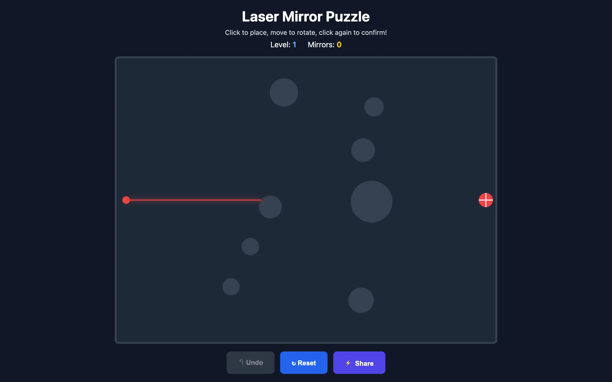
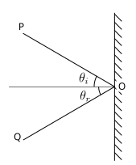
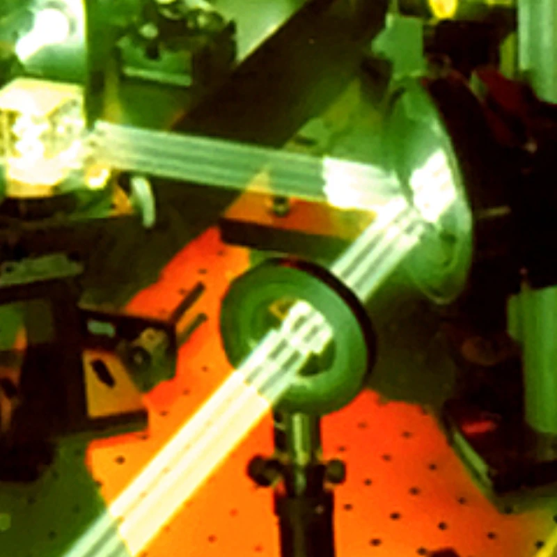

The idea is old. A laser fires from one point on the board. A target sits somewhere else. Between them, circular obstacles block the direct path. You place mirrors to bounce the laser beam around the obstacles and into the target. The fewer mirrors you use, the better your score.

{kind=link}
I've seen this puzzle in toy stores as a physical board game. The digital version has one advantage: you can generate an infinite number of levels.
Reflection physics
The laser is a ray. When it hits a mirror, the reflection follows the standard rule from optics: angle of incidence equals angle of reflection, computed relative to the mirror's normal vector. The game recalculates the full beam path every time you place or adjust a mirror, so you get instant visual feedback as you rotate a mirror into position. The beam traces itself across the canvas in real time, glowing red against the dark background.
Collision detection handles two kinds of geometry: flat mirrors (line segments) and round obstacles (circles). For mirrors, it's a ray-segment intersection test. For obstacles, it's ray-circle intersection. The beam terminates when it hits an obstacle, leaves the canvas bounds, or strikes the target. If it strikes the target, you win.
Placing mirrors
Mirror placement is a two-step interaction. You click (or tap) to set the mirror's position, then move your mouse (or drag your finger) to rotate it. A yellow preview shows the mirror's orientation before you confirm. On desktop, moving the mouse smoothly rotates the preview; on mobile, dragging accomplishes the same thing. A second click or a finger release locks the mirror in place.
This interaction model matters because the rotation is continuous. You aren't snapping to 45-degree increments. The beam path changes continuously as you rotate, so you can watch the laser sweep across the board and land it precisely on the target. There's an undo button if you misplace a mirror, and a full reset if you want to start over.

{kind=link}
Level generation
Each level is defined by the positions and sizes of its circular obstacles. The level number seeds a procedural generator that places progressively more obstacles as you advance. Early levels might have two or three small circles. Later levels pack the board with obstacles that force the beam through narrow gaps and around tight corners.
The obstacle configuration gets encoded into the URL. This means you can share a specific puzzle with someone by copying the link. They'll get the exact same layout you're looking at. It also means bookmarking a particularly tricky level works as you'd expect.
Implementation
The entire game is a single index.html file. No build step, no dependencies, no framework. Just HTML5 Canvas and JavaScript. The rendering loop draws the dark background, the obstacles as filled gray circles, the mirrors as blue line segments with endpoint markers, and the laser beam as a glowing red line with a subtle bloom effect.
I kept the visual design dark and minimal. The laser glow is the most visually prominent element on the screen, which is right because it's the thing you're trying to control. The obstacles are muted gray. The mirrors are calm blue. The target pulses gently when the laser hasn't reached it yet, then turns green when it has. No score popups, no particle explosions. Just the satisfaction of watching the beam snap into place.